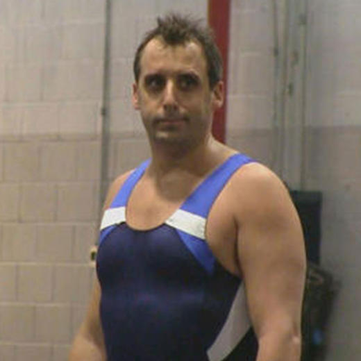

Collin Jones
Girls are difficult, but I ain't gay.
Well, my first favorite color is space blue, no cap. I like it because my very first iphone case was that color and also because it reminds me of my 4th grade classroom. My second favorite color is probably like Periwinkle. You know that cat off of Blue's Clues that was always super chill? Yeah that's why I like that color. My last favorite color is electric blue because I think it looks the best on a lot of sports cars, and who doesn't like sports cars, y'know?
